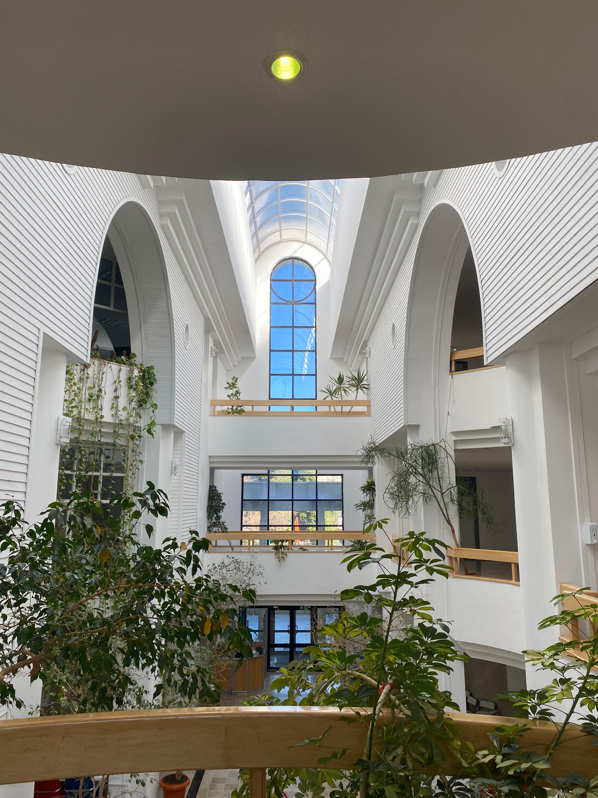

<!DOCTYPE html>
<html lang="en">
	<head>
		<meta charset="UTF-8">
		<title>Seminars Organizing</title>
		<link rel="icon" href="img/favicon.ico" type="image/x-icon ">
		<link rel="preconnect" href="https://fonts.googleapis.com">
		<link rel="preconnect" href="https://fonts.gstatic.com" crossorigin>
		<link href="https://fonts.googleapis.com/css2?family=Roboto:ital,wght@0,100;0,300;0,400;0,500;0,700;0,900;1,900&display=swap" rel="stylesheet">
		<link rel="stylesheet" href="style.css">
		<link rel="stylesheet" href="reset.css">
		<meta name="viewport" content="width=device-width, initial-scale=1.0" />
	</head>
</html>
<nav class="burger-menu">
	<ul>
	<li><a href="index.html">HOME</a></li>
    <li><a href="Research.html">RESEARCH</a></li>
	<li><a href="CV.html">CV</a></li>
	<li><a href="Teaching.html">TEACHING</a></li>
    <li><a href="Seminar.html">SEMINAR</a></li>    
	<li><a href="Contact.html">CONTACT</a></li>
	</ul>
</nav>

<header class="header-main">
	<nav class="header-main-nav">
		<ul>
		<li><a href="index.html">HOME</a></li>
        <li><a href="Research.html">RESEARCH</a></li>
	    <li><a href="CV.html">CV</a></li>
	    <li><a href="Teaching.html">TEACHING</a></li>
        <li><a href="Seminar.html">SEMINAR</a></li>    
	    <li><a href="Contact.html">CONTACT</a></li>
		</ul>
	</nav>
	<div class="burger-menu-btn"></div>
</header>
<body>
	<div class="div-profile">
		<div class="div-profile-photo">
		<center></center>
		</div>

		<div class="div-profile-info">
			<center><h2>Mehmet Kırtışoğlu</h2><br>
			
			<a href="http://www.fen.bilkent.edu.tr/~cvmath/" target="blank"></a><br>
			Bilkent University Department of Mathematics 06800 Ankara, Türkiye<br><br>
			
			<b>Contact me:</b><br><br>
			<a href="mailto:m.kirtisoglu@bilkent.edu.tr" target="blank"></a>&ensp;&ensp;&ensp;

			<a href="https://twitter.com/mehmetkirtiss" target="blank"></a>&ensp;&ensp;&ensp;

			<a href="https://www.instagram.com/mehmetkirtiss/" target="blank"></a>
			</center>
	</div>
</div>

<div class="div-main">
    <h2>Bilkent Mathematics Gradaute Seminar Series</h2>
    <br><p>This seminar series aims to foster collaboration and discussion
	among graduate mathematics students of Bilkent University and to showcase the topics
	being studied in our department for undergraduate students.</p><br>
    <p>2024-2025 Spring: </p>
	<br><br>
	<button class="collapsible">A Probabilistic Analysis of Decision Trees and Bootstrap Methods by Güneş Akbaş, April 10, Thursday, 2025, SA-141</button>
    <div class="content">
		<br>
		Abstract: Random forests enhance decision trees by reducing their weaknesses through ensemble methods. 
	    This seminar explores their mathematical foundations from a probabilistic viewpoint, focusing on decision trees 
	    as recursive partitioners and the role of probabilistic splits in variance reduction. We also discuss bootstrap resampling, 
	    which creates diverse training subsets and robust aggregation. Through theory and examples, we reveal how these elements 
	    combine to improve generalization and justify the effectiveness of random forests.
		<br><br>
		Advisor: Asst. Prof. Naci Saldı
		<br><br>
    </div>
	<button class="collapsible">The Yang-Baxter Equation and Quantum Groups by Serkan Doğan, March 27, Thursday, 2025, SA-141</button>
    <div class="content">
		<br>
		Abstract: The Yang-Baxter equation is a key tool in both knot theory and quantum groups. In this talk, we will explore how
	    	it appears in the study of knots, leading to invariants like the Jones polynomial. We will also discuss its connection to Hopf 
	    	algebras, which play a central role in quantum groups. Through examples, we will see how these ideas come together and why the 
	    	Yang-Baxter equation is so important in mathematical physics and algebra.
		<br><br>
		Advisor: Asst. Prof. Cihan Okay
		<br><br>
    </div>
	<button class="collapsible">Introduction to Representation Theory of Groups
        by Esat Akın, March 20, Thursday, 2025, SA-Z01</button>
    <div class="content">
		<br>
		Abstract: Representation Theory studies algebraic structures through their manifestations
	    	in other mathematical objects. In the first half of this talk, we explore the philosophy of
	    	the theory through a variety of examples, including group representations in Harmonic Analysis,
	    	Quantum Physics and Number Theory. We then shift our focus to the study of finite group
	    	representations, discussing historical developments and emerging functorial methods within
	    	the theory.
		<br><br>
		Advisor: Assoc. Prof. Laurence Barker
		<br><br>
    </div>
	<button class="collapsible">Breakdown of observability in networks
        by Onur Ege Erden, Feb 27, Thursday, 2025, SA-141</button>
    <div class="content">
		<br>
		Abstract: We will consider the observability of networks under linear dynamics. Specifically, we will investigate
		when the observability breaks down. In this investigation, we encounter and define a class of vertex pairs that induce 
		this breakdown. We will then consider their defining properties and give some constructive methods to obtain them.
		<br><br>
		Advisor: Prof. Dr. Fatihcan Atay
		<br><br>
    </div>

	<button class="collapsible">Short Exact Sequences Of Frechet Algebras
               by Yaman Paksoy, Feb 20, Thursday, 2025, SA-141</button>
    <div class="content">
		<br>
		Abstract: A sequence of vector spaces, each of them mapped to the next space by a linear operator is called exact if 
		the range of each mapping is the kernel of the subsequent one. An exact sequence is called short when there are only 
		three non-trivial vector spaces in the sequence, in which case there are two operators, where one is an injection and 
		the other a surjection. The sequence is said to split if the surjection has a right inverse, or equivalently the 
		injection has a left inverse. This language, developed by Vogt, in the context of Frechet-Hilbert spaces is a useful 
		tool to study subspaces and quotient spaces of some important function algebras. In this talk, we will go over the 
		theory and some open problems regarding the more general, and the more specific settings.
		<br><br>
		Advisor: Assoc. Prof. Alexander Goncharov
		<br><br>
    </div>

    <button class="collapsible">An Introduction to Cohomology of Small Categories
		by
		Mehmet Kırtışoğlu, Feb 13, Thursday, 2025, SA-141</button>
    <div class="content">
		<br>
		Abstract: In this talk, we will explore various definitions of the cohomology of (small) categories, 
		depending upon the coefficient system, such as traditional category cohomology (1965), Buaes-Wirsching Cohomology (1985), 
		and Thomason Cohomology (2013). After introducing fundamental concepts and frameworks, we give a detailed examination 
		of cohomology computations for simple examples of categories. Lastly, we will finish by introducing the functoriality 
		problem. This presentation is aimed at an audience ranging from undergraduates to researchers, and no prior 
		knowledge is necessary.
		<br><br>
		Advisor: Prof. Dr. Ergün Yalçın
		<br><br>
    </div>

	<button class="collapsible"> An Introduction to the Dedekind Eta Function and Its Modular Properties by Metin Can Aydemir,
		Feb 6, Thursday, 2025, SA-141
	</button>
    <div class="content">
		<br>
		Abstract:  The Dedekind eta function, a fundamental object in the theory of modular forms, plays a key role in
		number theory, elliptic functions, and mathematical physics. In this seminar, we will introduce the eta function, 
		explore its transformation properties under the modular group, and prove a functional equation. Our discussion will 
		highlight the significance of modularity and its implications in broader mathematical contexts. 
		No prior knowledge of modular forms will be assumed, making this an accessible introduction to the topic.
		<br><br>
		Advisor: Assoc. Prof. Hamza Yeşilyurt
		<br><br>
    </div>

   
    
    <script>
    var coll = document.getElementsByClassName("collapsible");
    var i;
    
    for (i = 0; i < coll.length; i++) {
      coll[i].addEventListener("click", function() {
        this.classList.toggle("active");
        var content = this.nextElementSibling;
        if (content.style.maxHeight){
          content.style.maxHeight = null;
        } else {
          content.style.maxHeight = content.scrollHeight + "px";
        } 
      });
    }
    </script>
    


<hr>
<br>
<p>Last modified:</p>
<p id="demo"></p>

<script>
let text = document.lastModified;
document.getElementById("demo").innerHTML = text;
</script>
<script src="main.js"></script>
<br><br><br><br>
</div>
</body>

